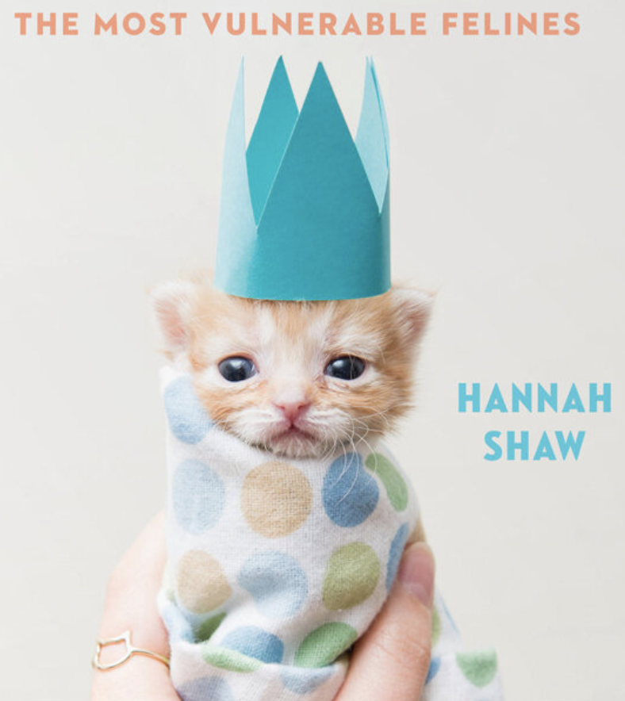
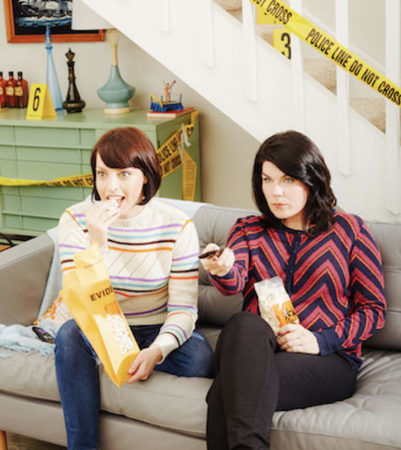
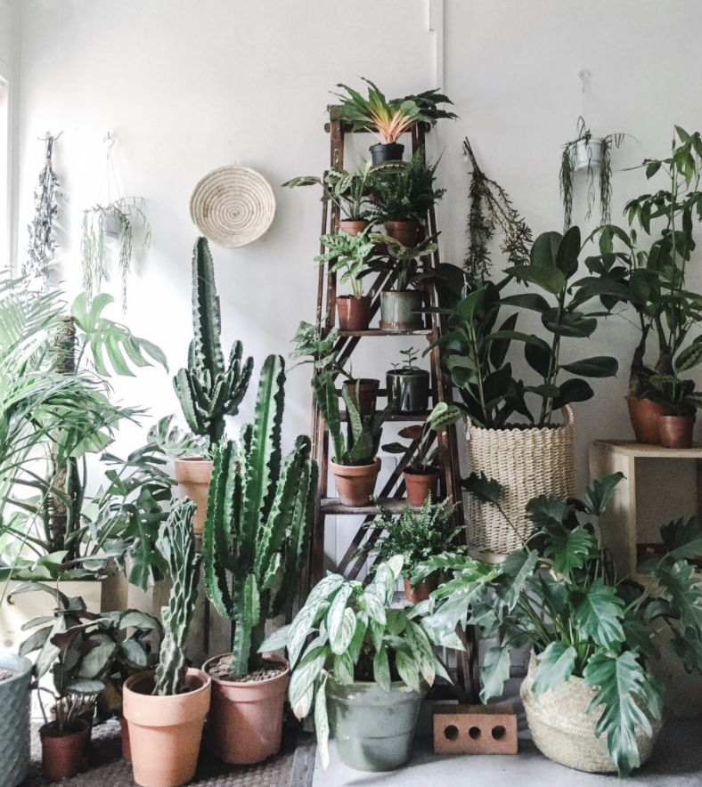

The only challenge I had was that my image was broken at first. I realized that I forgot the "img" in the "img/code-screenshot.png"
You can see the results of the code below.
This site is about Hannah Shaw, a animal rights activists that specializes in kittens. She fosters kittens, usually who would not survive without her.
My Favorite Murder is the hit true crime comedy podcast hosted by Karen Kilgariff and Georgia Hardstark.
Jane Parrone is a freelance journalist, and presenter and producer of indoor gardening podcast On The Ledge.
Kitten Lady Rescue On The Ledge My Favorite Murder